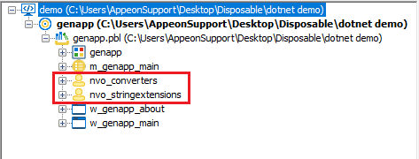

README - Import a .NET DLL into PowerBuilder
1. You can use the .NET DLL Importer tool to quickly enable the current PowerBuilder application to
use .NET DLLs
 |
️ |
 |
|
Open the .NET DLL Importer Tool
|
|
Select the file and configure the import settings
|
2. New NVOs are added to the project, these objects wrap around the DLLs to make them usable from PowerBuilder:

3. You can now use these objects to invoke the .NET code:
nvo_stringextensions inv_stringExtensions
inv_stringExtensions = create nvo_stringextensions
string ls_result
ls_result = inv_stringExtensions.of_replace("Using .NET Code from ;", ";", "PowerBuilder")
// ls_result's value is now "Using .NET Code from PowerBuilder"
destroy inv_stringExtensions